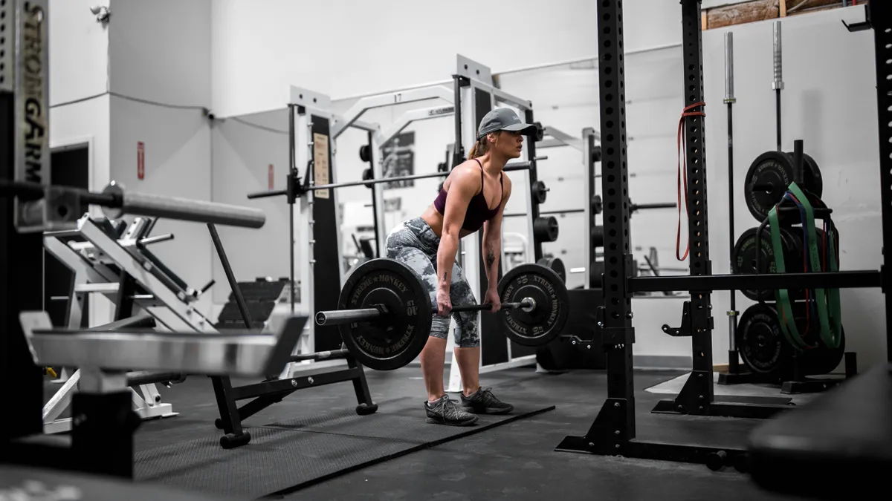

El gimnasio: el mejor camino hacia una salud optima, tanto mental como fisica.
En el camino hacia la transformación física, la autoregulación de pesos es clave. Acordate, no se trata
solo de levantar más y más peso, sino de hacerlo de manera inteligente y segura. Escucha tu cuerpo y
respétalo. Si no ¡te lesionas! y te alejas de tus objetivos.
El verdadero disfrute se encuentra en el proceso, en cada repetición, en cada gota
que surge de nuestro sufrimiento. No te vuelvas loco buscando resultados inmediatos, enfocate en el
esfuerzo constante y la
dedicación diaria. El progreso real no se mide solo en números, sino en tu capacidad para superarte a ti
mismo día tras día.
A veces es necesario bajar los pesos, ya sea para permitir que tu cuerpo se recupere
adecuadamente o para trabajar en la técnica y la resistencia. ¡No te pongas bajon!, esto no
significa que estas estancado. Es una estrategia para no sobreexigir los musculos y obtener mejores
resultados a la larga.
Dar toda la energía al primer ejercicio de tu rutina puede ser contraproducente.
Al repartir tu energía de manera equilibrada a lo largo del entrenamiento, vas a estar motivado
y con ganas de completar toda tu rutina diaria. No tires la toalla antes de tiempo, cada ejercicio
cuenta y te
acerca más a tus metas.
Así que mantén tu mente enfocada, escucha a tu cuerpo, disfruta cada paso del proceso y recuerda que el
verdadero éxito radica en tu determinación y en tu capacidad para superar los desafíos que se te
presenten. ¡Sigue adelante y alcanza tu mejor versión en el gimnasio y fuera de él!